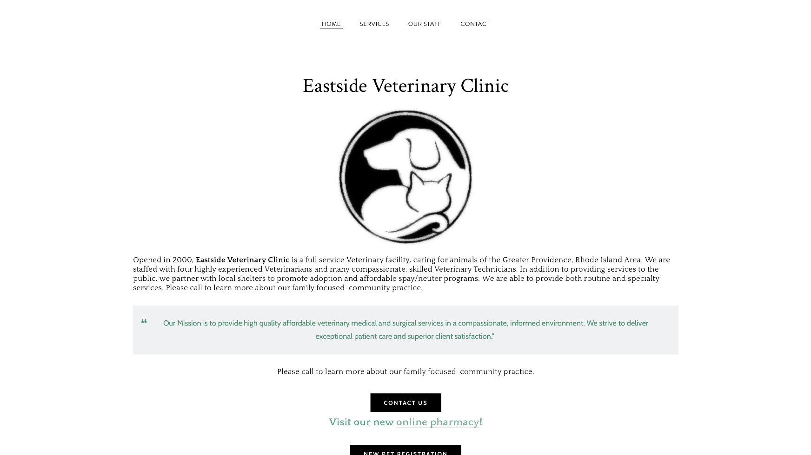
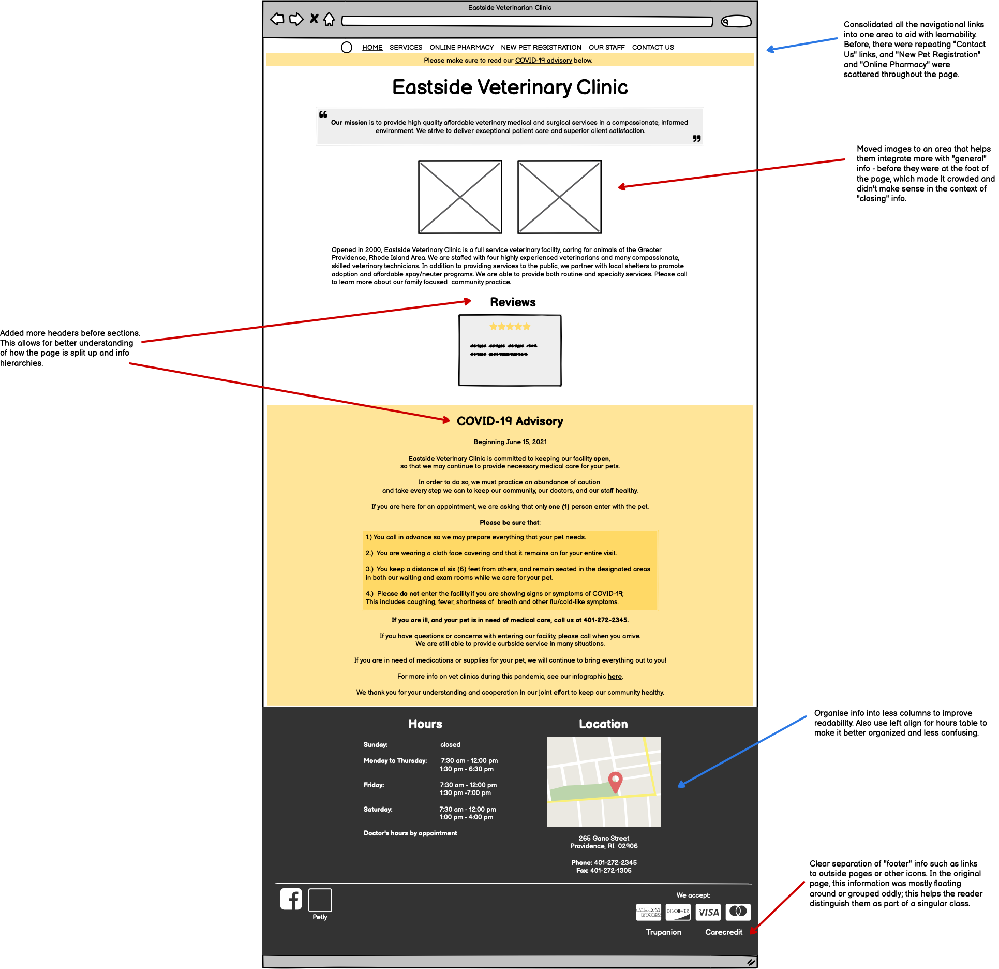
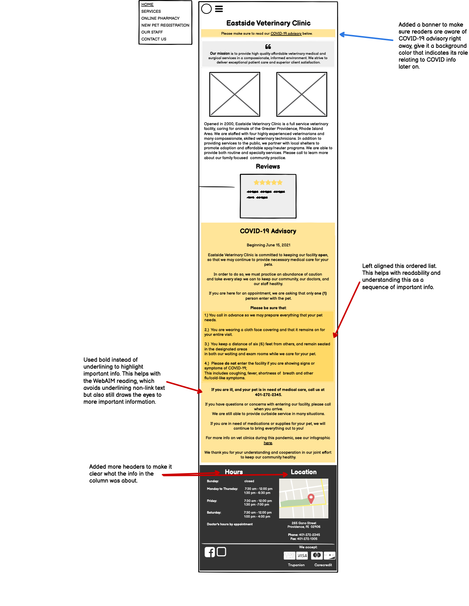
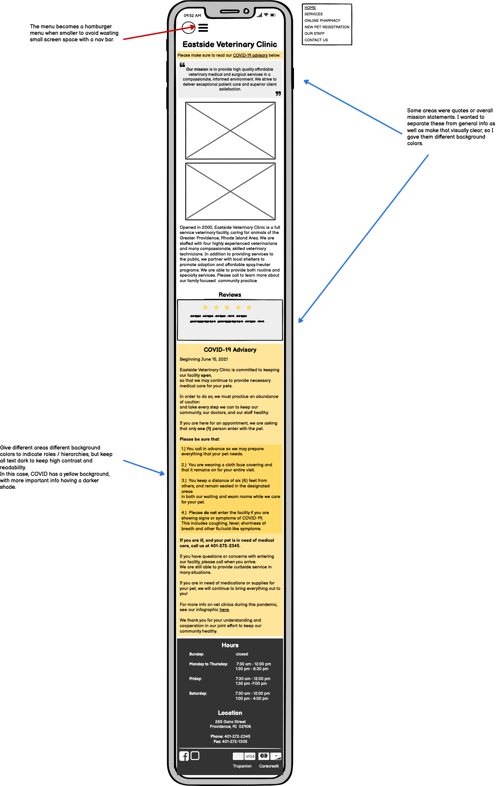
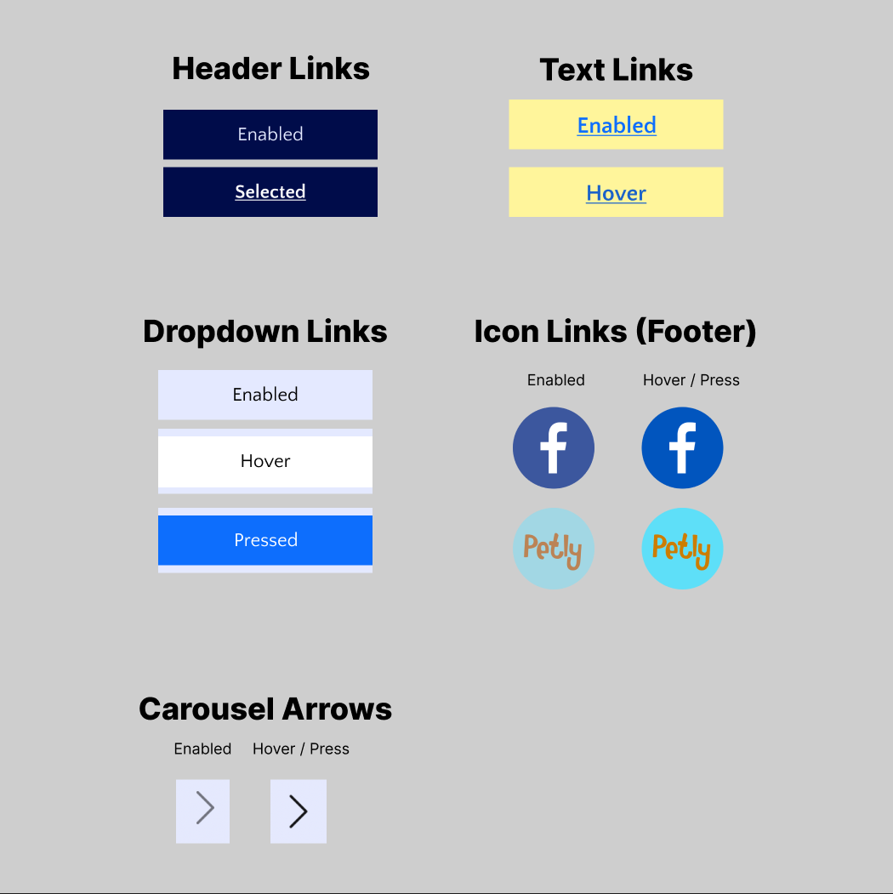
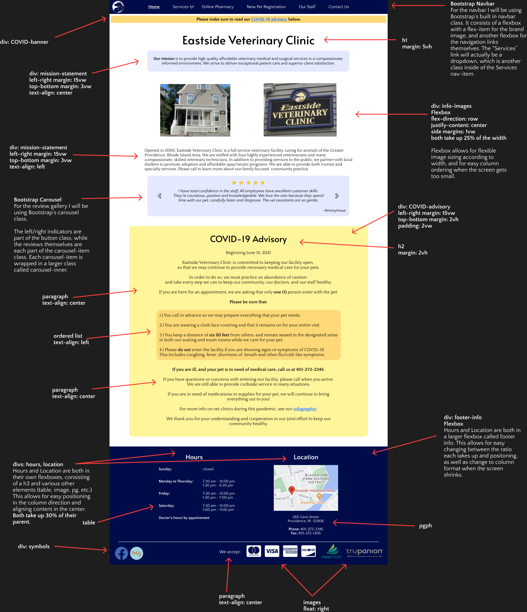
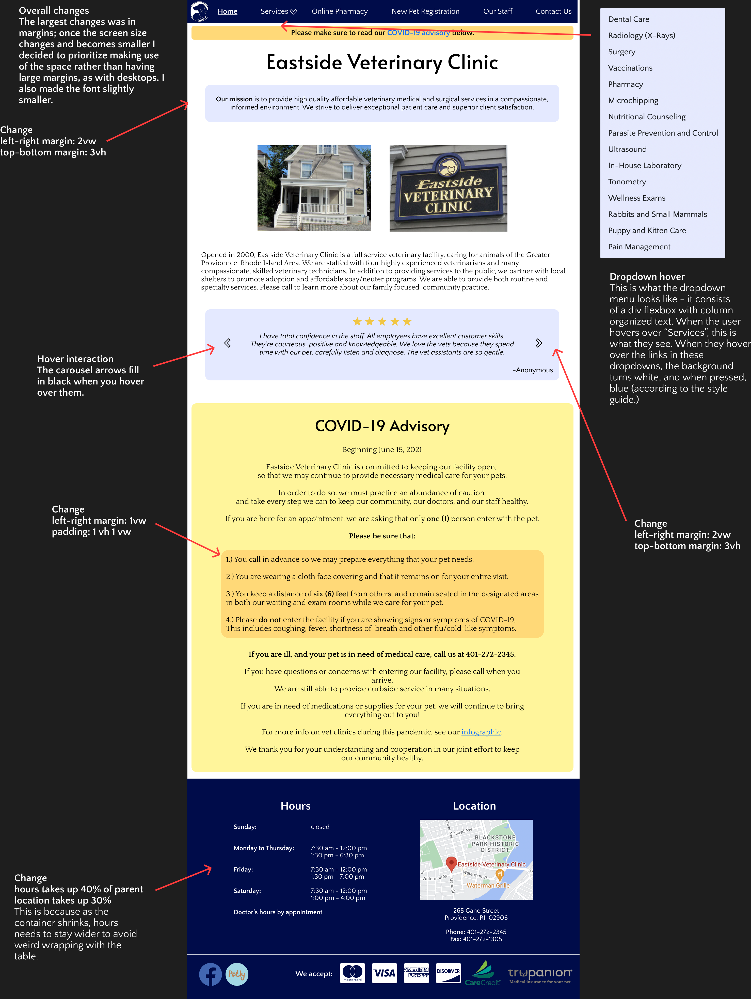
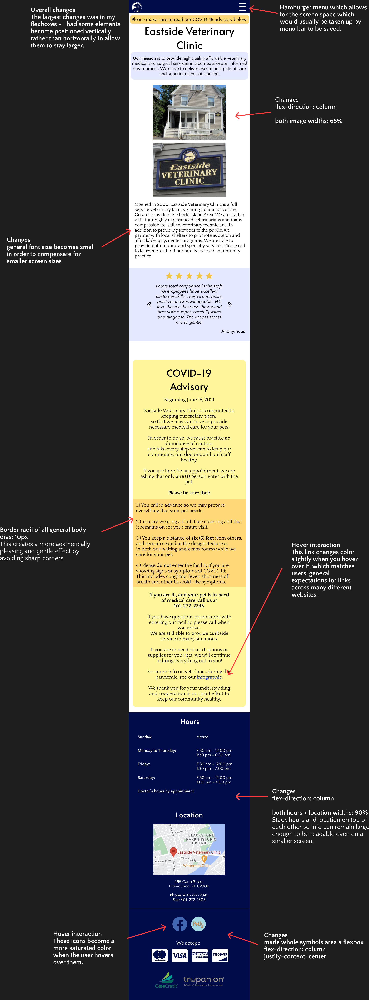

This assignment was to take a page, identify its usability pitfalls, and redesign it with those in mind. It also walked us through the lo-fi and hi-fi prototyping process.

I chose this website, Eastside Veterinary Clinic, because while it’s generally simple, there’s a lot of different interactive elements (dropdown, embedded links, carousels) and odd creative choices (floating elements, different colored text) to redesign.
Usability
Learnability - Is it easy to learn to use (new users)?
This website is simple to learn how to use - you scroll down like a single sheet of paper. In general, the website is plain, without much marking of hierarchy - there aren’t much sectioned off areas, headers, etc. This doesn’t make it immediately clear where to go for what info. This leads to low-medium learnability.
Memorability - Is it easy to recall what to do (casual users)?
In some areas there are links scattered throughout, and images or elements floating without a clear position or hierarchy. It isn’t quite intuitive or matching of what someone would expect, which would essentially make a casual user have to remember the quirks of this site each time. This leads to low memorability.
Efficiency - Can typical tasks be done quickly (frequent users)?
Generally, the website is simple and if someone knows where to go, it would be very quick to navigate to that section. So it is highly efficient in this sense.
Conceptual Model - How a user expects it to work
The conceptual model of this website, at first, seems like a “table of contents” with a scrollable page, almost like a plain sheet of paper. However, it gets confusing since there are repeated links scattered throughout, and it suddenly splits into three columns at the footer, which is not marked by any sort of indicator.
Accessibility
Underlined non-links - WebAIM noted that in some areas, the text is underlined even though it is not a link. Almost universally, underlined text represents links online so this should be avoided to curb misunderstanding.
Poor visibility - There are areas where text is light green or red against a white backgrouund. WebAIM noted that this leads to poor visibility because contrast is low.
No page regions - WebAIM noted that there is a lack of general page regions. There is not much use of headers, and no “header one” for ARIA purposes.
I do agree with these findings and find they overlap a lot with the general usability problems I noted with usability, the biggest problem being a lack of clear info hierarchy / separation.
Prototypes
Note: I separated the annotations for the wireframes across the three of them to make them less crowded and avoid repetitions. So most of them apply to all three, unless explicitly noted as a change.
Lo-Fi Prototypes
The large things I tried to target with lo-fi prototypes was hierarchy - I made use of background colors, headers, and clear column organizations to make info hierarchies clear.
Desktop

Tablet

Phone

Style Guide

Hi-Fi Prototypes
With hi-fi prototypes, I largely consolidated creative color and font choices, as well as differences between the sizes. I chose a serif font for general body text (Quattrocento), a sans serif font for navigational / meta info (Quattrocento Sans), and a simple sans serif font for headers (Alata).
Desktop

Tablet

Phone

Redesigned Page
Here is the link to my redesigned page! (Also a link to the old original.)
Some things to note: the carousel was a bit tricky to edit and navigate as it is quite a complicated class with JavaScript involved. Bootstrap's carousel is meant for images, so I uploaded reviews as images, which causes them to shrink extremely small when on a phone. Ideally, I would fix this going forward!